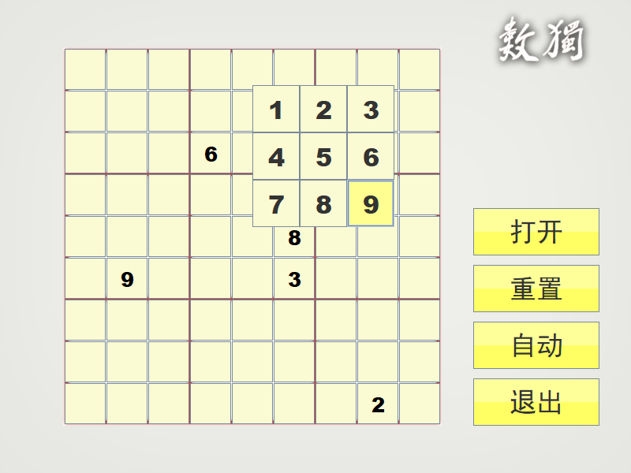
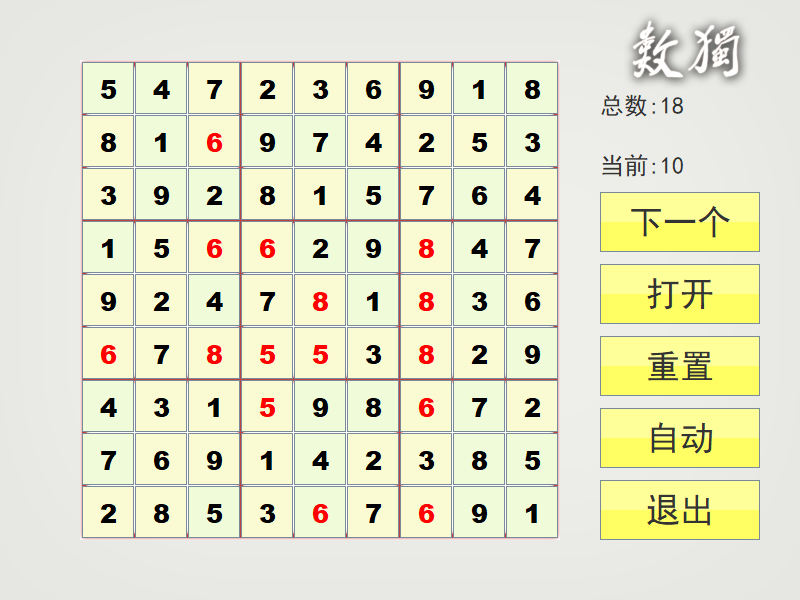
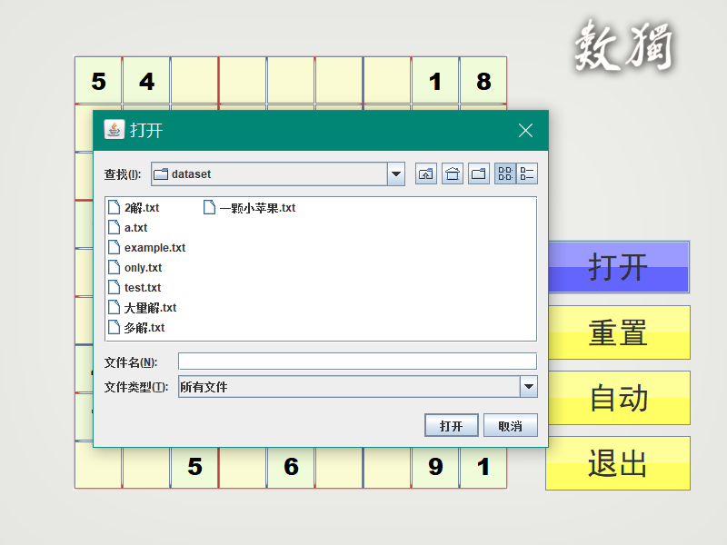

Sudoku
文章目录
|  |  |  |
|---|
简介
数独程序，解题的目的是根据9×9盘面上的已知数字，推理出所有剩余空格的数字，并满足每一行、每一列、每一个粗线宫内的数字均含1-9，不重复。
这个程序能够判断重复的数字，并能够根据给定的题目进行自动解题。
技术
程序可以分为四个模块，分别如下：
核心模块（Core）：负责游戏逻辑。
用户界面模块（Gui）：对界面进行生成和事件的管理。
人工智能模块（Ai）：用于数独的自动求解。
测试模块（test）：在开发的各个阶段进行模块测试。
逻辑分析
数独对于每一个数字，必须满足一行、一列、一宫格都没有与之相同的数字。因此，游戏应该在每次改变矩阵数据时检测发生冲突的数字。
为了减小算法的复杂度，这里设置一个数组，用来累加同一行、同一列、同一个宫格各个数字出现的数量，当且仅当数字对应的数组值为0时，该数字不冲突，否则发生冲突。通过分析不难发现该算法的复杂度为O(n)。
AI算法设计思路
问题分析
从数独的规则上面不难看出，要求出某一个数独的所有解，对于计算机来说，实际上是一个NP完全问题。对于NP完全问题，只能通过逐个试探或猜测的方法求得可行解。由于需要求出所有的可行解，所以必须通过遍历的方法，尝试所有的潜在解法。
在尝试填解的过程中，必须对每一步进行冲突检测，为了进一步提高算法的效率，Ai自身实现了一个避免冲突的算法，提供一个获取可填数字列表的函数，该函数的实现过程是：维持一个数字数组，对于目标数字所在行列、宫格的每一个数字进行遍历，没遇到一个不为零的数，对应数组的值加一，遍历完成时，如果数组元素的值为零，则表示该数可填。
解决方案
在这里，由于需要遍历所有的解空间，所以使用的算法是回溯法。
回溯法在包含问题的所有解的解空间树中，按照深度优先搜索的策略，从根结点出发深度探索解空间树。当探索到某一结点时，要先判断该结点是否包含符合数独规则的解，如果包含，就从该结点出发继续探索下去，如果该结点不包含问题的解，则逐层向其祖先结点回溯。（也即对隐式图的深度优先搜索算法）。 用回溯法求问题的所有解时，一直回溯到根，且根结点的所有可行的子树都要已被搜索遍则束。
AI算法性能分析
AI的算法是回溯法，其解空间的大小由给定的题目决定。根据相关资料可知，空的数独解空间约为6.67×10的21次方，而对于标准数独，解空间是唯一的，因此，很难通过理论分析判定该算法的复杂度。但是，可以通过实测得到近似的平均求解时间。
通过多次测试去平均值，该AI算法解决一个数独用的时间平均为0.453ms。
环境
- Intellij IDEA
文章作者 Lianera
上次更新 2015年01月10日